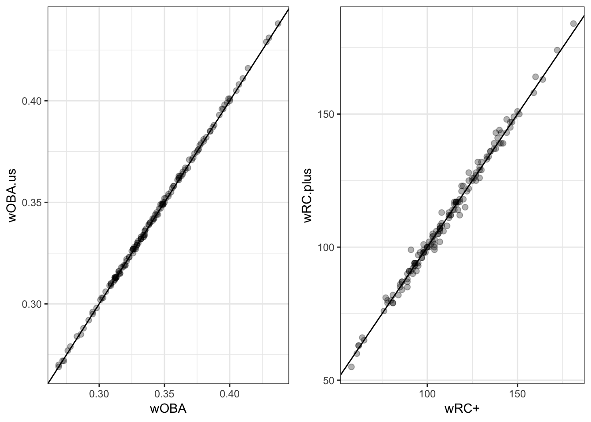

library(tidyverse)
library(gridExtra)
setwd('/Users/walkerharrison/Downloads/chadwick-0.6.5')
get_plays <- function(season){
season.path <- paste0('download.folder/unzipped/all', season, '.csv')
if (!file.exists(season.path)) {parse.retrosheet2.pbp(season)}
plays <- read_csv(season.path)
fields <- read_csv('download.folder/unzipped/fields.csv')
names(plays) <- fields %>% pull(Header)
return(plays)
}
plays2017.raw <- get_plays(2017)
add_columns <- function(plays.raw){
event_key <- read_csv('download.folder/unzipped/event_key.csv')
event_key$RESULT[event_key$EVENT_CD == 19] <- "Fielder's Choice"
plays.raw <- plays.raw %>% inner_join(event_key, by = "EVENT_CD") %>%
mutate(RESULT = as.factor(RESULT))
plays <- plays.raw %>%
rowwise() %>%
mutate(runs.play = sum(BAT_DEST_ID > 3,
RUN1_DEST_ID > 3,
RUN2_DEST_ID > 3,
RUN3_DEST_ID > 3,
na.rm = TRUE)) %>%
mutate(on.first = ifelse(is.na(BASE1_RUN_ID), '_', '1B'),
on.second = ifelse(is.na(BASE2_RUN_ID), '_', '2B'),
on.third = ifelse(is.na(BASE3_RUN_ID), '_', '3B')) %>%
mutate(base = paste(on.first, on.second, on.third),
out = OUTS_CT) %>%
mutate(base_out = paste(base, out)) %>%
group_by(GAME_ID, INN_CT, BAT_HOME_ID) %>%
mutate(base_out_end = lead(base_out, default = "END"),
HOME_TEAM_ID = substr(GAME_ID, 1, 3)) %>%
select(GAME_ID, HOME_TEAM_ID, AWAY_TEAM_ID, INN_CT, BAT_HOME_ID,
OUTS_CT, AWAY_SCORE_CT, HOME_SCORE_CT, BAT_ID, PIT_ID,
EVENT_CD, AB_FL, H_FL, SH_FL, SF_FL, RESULT,
runs.play, base_out, base_out_end)
return(plays)
}
plays2017 <- add_columns(plays2017.raw)
make_RE_matrix <- function(plays){
inning.runs <<- plays %>%
group_by(GAME_ID, INN_CT, BAT_HOME_ID) %>%
summarize(runs.inning = sum(runs.play)) %>%
arrange(GAME_ID, BAT_HOME_ID, INN_CT) %>%
group_by(GAME_ID, BAT_HOME_ID) %>%
mutate(runs.cum = cumsum(runs.inning))
runs.league <<- inning.runs %>%
group_by(GAME_ID, BAT_HOME_ID) %>%
summarize(runs = max(runs.cum)) %>%
ungroup() %>%
summarize(runs = sum(runs)) %>%
pull(runs)
RE.matrix <- plays %>%
inner_join(inning.runs, by = c('GAME_ID', 'INN_CT', 'BAT_HOME_ID')) %>%
mutate(runs.current = ifelse(BAT_HOME_ID == 1, HOME_SCORE_CT, AWAY_SCORE_CT)) %>%
mutate(runs.left = runs.cum - runs.current) %>%
group_by(base_out) %>% summarize(runs.expected = mean(runs.left)) %>%
rbind(data.frame(base_out = "END", runs.expected = 0))
return(list("matrix" = RE.matrix, "runs" = runs.league))
}
RE.matrix2017 <- make_RE_matrix(plays2017)
get_run_values <- function(plays, RE.matrix){
matrix <- RE.matrix$matrix
runs <- RE.matrix$runs
run.values <- plays %>%
inner_join(matrix, by = "base_out") %>%
inner_join(matrix, by = c("base_out_end" = "base_out")) %>%
rename(runs.expected = runs.expected.x,
runs.expected.end = runs.expected.y) %>%
group_by(RESULT) %>%
summarize(n = n(),
run.value = mean(runs.play + runs.expected.end - runs.expected))
out.value <- run.values %>%
filter(RESULT %in% c("Generic out", "Strikeout", "Fielder's Choice")) %>%
summarize(run.value = weighted.mean(run.value, w = n)) %>%
pull(run.value)
run.values <- run.values %>%
mutate(run.value.over.out = run.value - out.value)
PA.league <- sum(plays$AB_FL) + sum(plays$SH_FL) + sum(plays$SF_FL) +
sum(plays$RESULT %in% c("Walk", "Intentional walk", "Hit by pitch", "Interference"))
runs.per.PA <- runs/PA.league
wOBA.league <- (sum(plays$H_FL > 0) + sum(plays$RESULT %in% c("Walk", "Hit by pitch")))/
(sum(plays$AB_FL) + sum(plays$SF_FL) + sum(plays$RESULT %in% c("Walk", "Hit by pitch")))
wOBA.raw <- run.values %>%
filter(RESULT %in% c("Home run", "Triple", "Double", "Single", "Hit by pitch", "Walk", "Intentional walk")) %>%
summarize(run.value.over.out = sum(run.value.over.out*n)) %>%
pull(run.value.over.out)/PA.league
wOBA.scale <- wOBA.league/wOBA.raw
run.values <- run.values %>%
mutate(weight = run.value.over.out*wOBA.scale)
return(list("RV" = run.values, "wOBA.league" = wOBA.league, "wOBA.scale" = wOBA.scale, "RpPA" = runs.per.PA))
}
run.values.2017 <- get_run_values(plays2017, RE.matrix2017)
get_wOBA <- function(player, plays, run.values){
plays.player <- plays %>% ungroup() %>%
filter(BAT_ID == player)
player.events <- plays.player %>% count(RESULT) %>% complete(RESULT, fill = list(n=0))
NIBB <- player.events %>% filter(RESULT == "Walk") %>% pull(n)
IBB <- player.events %>% filter(RESULT == "Intentional walk") %>% pull(n)
HBP <- player.events %>% filter(RESULT == "Hit by pitch") %>% pull(n)
B1 <- player.events %>% filter(RESULT == "Single") %>% pull(n)
B2 <- player.events %>% filter(RESULT == "Double") %>% pull(n)
B3 <- player.events %>% filter(RESULT == "Triple") %>% pull(n)
HR <- player.events %>% filter(RESULT == "Home run") %>% pull(n)
SF <- sum(plays.player$SF_FL)
AB <- sum(plays.player$AB_FL)
PA <- sum(plays.player$AB_FL) + sum(plays.player$SH_FL) + sum(plays.player$SF_FL) +
sum(plays.player$RESULT %in% c("Walk", "Intentional walk", "Hit by pitch", "Interference"))
RV <- run.values$RV
wB1 <- RV %>% filter(RESULT == "Single") %>% pull(weight)
wB2 <- RV %>% filter(RESULT == "Double") %>% pull(weight)
wB3 <- RV %>% filter(RESULT == "Triple") %>% pull(weight)
wHR <- RV %>% filter(RESULT == "Home run") %>% pull(weight)
wBB <- RV %>% filter(RESULT == "Walk") %>% pull(weight)
wHBP <- RV %>% filter(RESULT == "Hit by pitch") %>% pull(weight)
wOBA <- (wBB*(NIBB) + wHBP*HBP + wB1*B1 + wB2*B2 + wB3*B3 + wHR*HR)/
(AB + NIBB + SF + HBP)
return(c('PA' = PA, 'wOBA' = round(wOBA, 3)))
}
get_league_wOBAs <- function(plays, run.values,
AL = c('BAL', 'BOS', 'CHA', 'CLE', 'DET',
'HOU', 'KCA', 'ANA', 'MIN', 'NYA',
'OAK', 'SEA', 'TBA', 'TEX', 'TOR')){
pitchers <- plays %>%
filter(INN_CT < 8) %>%
pull(PIT_ID) %>% unique()
plays <- plays %>%
filter(!BAT_ID %in% pitchers) %>%
mutate(BAT_ID = ifelse(HOME_TEAM_ID %in% AL, "AL", "NL"))
wOBA.AL <- get_wOBA("AL", plays, run.values)
wOBA.NL <- get_wOBA("NL", plays, run.values)
return(
data.frame(
league = c("AL", "NL"),
wOBA = c(wOBA.AL['wOBA'], wOBA.NL['wOBA']),
PA = c(wOBA.AL['PA'], wOBA.NL['PA'])
)
)
}
league.wOBAs.2017 <- get_league_wOBAs(plays2017, run.values.2017)
make_park_factors <- function(plays, regress = 0.1){
park.factors = plays %>%
group_by(GAME_ID, HOME_TEAM_ID, AWAY_TEAM_ID) %>%
summarize(runs = sum(runs.play)) %>%
ungroup() %>%
select(-GAME_ID) %>%
rename(home = HOME_TEAM_ID, away = AWAY_TEAM_ID) %>%
gather(location, team, -runs) %>%
group_by(team, location) %>%
summarize(RPG = mean(runs)) %>%
spread(location, RPG) %>%
mutate(PF = (home/away)/2 + 0.5) %>%
mutate(PF = round((1 - regress)*PF + regress, 2)) %>%
select(team, PF)
return(park.factors)
}
park.factors.17.1yr <- make_park_factors(plays2017)
plays2016 <- add_columns(get_plays(2016))
plays2015 <- add_columns(get_plays(2015))
park.factors.17.3yr <- rbind(plays2015, plays2016, plays2017) %>%
make_park_factors(regress = 0.05)
get_wRC_plus <- function(player, plays, run.values, league.wOBAs, park.factors,
AL = c('BAL', 'BOS', 'CHA', 'CLE', 'DET',
'HOU', 'KCA', 'ANA', 'MIN', 'NYA',
'OAK', 'SEA', 'TBA', 'TOR')){
plays.player <- plays %>% ungroup() %>%
filter(BAT_ID == player)
tm <- plays.player %>%
filter(BAT_HOME_ID == 1) %>%
slice(1) %>% pull(HOME_TEAM_ID)
PF <- park.factors %>%
filter(team == tm) %>%
pull(PF)
wOBA <- get_wOBA(player, plays, run.values)
PA <- wOBA['PA']
wOBA <- wOBA['wOBA']
OBP <- run.values$wOBA.league
wOBA.scale <- run.values$wOBA.scale
RpPA <- run.values$RpPA
lg <- ifelse(tm %in% AL, 'AL', 'NL')
wOBA.league <- league.wOBAs %>% filter(league == lg) %>% pull(wOBA)
PA.league <- league.wOBAs %>% filter(league == lg) %>% pull(PA)
wRC.league <- ((wOBA.league - OBP)/wOBA.scale + RpPA)*PA.league
wRC.plus <- 100 * ( ( (wOBA - OBP)/wOBA.scale + RpPA) + (RpPA - PF*RpPA) ) /
(wRC.league/PA.league)
return(round(unname(wRC.plus)))
}
# get_wRC_plus('blacc001', plays2017, run.values.2017, league.wOBAs.2017, park.factors.3yr)
# get_wOBA('judga001', plays2017, run.values.2017)
# get_wRC_plus('judga001', plays2017, run.values.2017, league.wOBAs.2017, park.factors.2017)
# get_wRC_plus('stanm004', plays2017, run.values.2017, league.wOBAs.2017, park.factors.2017)
players.2017 <- read_csv('/Users/walkerharrison/Downloads/master.csv') %>%
mutate(playerid = as.integer(fg_id))
fg <- read_csv('/Users/walkerharrison/Downloads/FanGraphsLeaderboard.csv')
leaders <- fg %>% inner_join(players.2017, by = 'playerid') %>%
select(playerid, retro_id, Name, wOBA, `wRC+`)
leaders <- leaders %>% rowwise() %>%
mutate(wOBA.us = get_wOBA(retro_id, plays2017, run.values.2017)['wOBA'],
wRC.plus = get_wRC_plus(retro_id, plays2017, run.values.2017, league.wOBAs.2017, park.factors.17.3yr))
g1 <- leaders %>% ggplot(aes(wOBA, wOBA.us)) + geom_point(size = 2, alpha = 0.3) +
geom_abline(slope = 1, intercept = 0) + theme_bw()
g2 <- leaders %>% ggplot(aes(`wRC+`, wRC.plus)) + geom_point(size = 2, alpha = 0.3) +
geom_abline(slope = 1, intercept = 0) + theme_bw()
grid.arrange(g1, g2, nrow = 1)